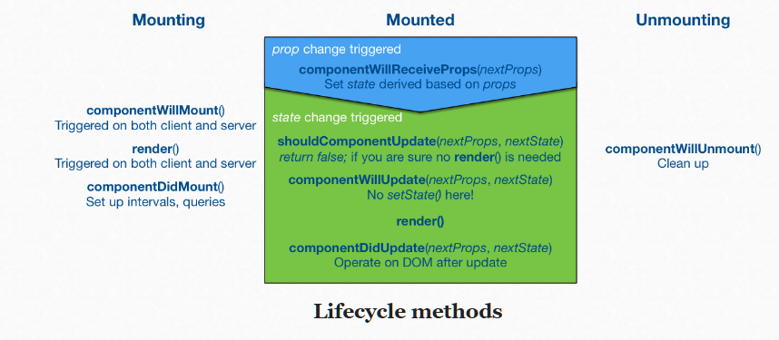

Understanding React components¶
As we have seen so far, React components are fairly simple. They can have internal state. They can also accept props. Beyond this React provides escape hatches that allow you to handle advanced use cases. These include lifecycle methods and refs. There are also a set of custom properties and methods you may want to be aware of.
Lifecycle Methods¶
{kind=link}
From the image above we can see that a React component has three phases during its lifecycle. It can be mounting, mounted, and unmounting. Each of these phases comes with related methods.
During the mounting phase you have access to the following:
componentWillMount() gets triggered once before any rendering. One way to use it would be to load data asynchronously there and force rendering through setState. render() will see the updated state and will be executed only once despite the state change. This will get triggered when rendering on a server.
componentDidMount() gets triggered after initial rendering. You have access to the DOM here. You could use this hook to wrap a jQuery plugin within a component, for instance. This won’t get triggered when rendering on a server.
After a component has been mounted and it’s running, you can operate through the following methods:
componentWillReceiveProps(object nextProps) triggers when the component receives new props. You could, for instance, modify your component state based on the received props.
componentWillUpdate(object nextProps, object nextState) gets triggered after shouldComponentUpdate and before render(). It is not possible to use setState here, but you can set class properties, for instance.
componentDidUpdate(object nextProps, object nextState) is triggered after rendering. You can modify the DOM here. This can be useful for adapting other code to work with React.
Finally, when a component is unmounting, there’s one more hook you can use:
componentWillUnmount() is triggered just before a component is unmounted from the DOM. This is the ideal place to perform cleanup (e.g., remove running timers, custom DOM elements, and so on).
Often componentDidMount and componentWillUnmount come as a pair. If you set up something DOM related or a listener at componentDidMount, you also have to remember to clean it up at componentWillUnmount.
Custom properties and methods¶
Beyond the lifecycle methods and refs, there are a variety of properties and methods you should be aware of especially if you are going to use React.createClass:
displayName - It is preferable to set displayName as that will improve debug information. For ES6 classes this is derived automatically based on the class name. You can attach displayName to an anonymous function based component as well.
getInitialState() - In class based approach the same can be achieved through constructor.
getDefaultProps() - In classes you can set these in constructor.
render() - This is the workhorse of React. It must return a single node as returning multiple won’t work!
statics - statics contains static properties and method for a component. In ES6 you can assign them to the class as below
Exampple:
class Note {
render() {
...
}
}
Note.willTransitionTo = () => {...};
export default Note;
This could also be written as:
class Note {
static willTransitionTo() {...}
render() {
...
}
}
export default Note;